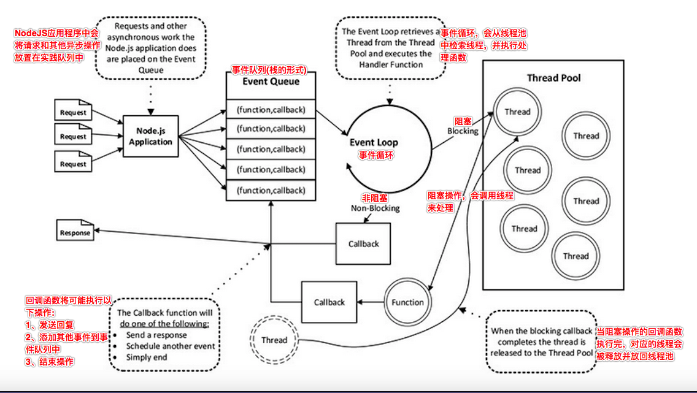

fs模块
fs 模块
文件系统，对文件/文件夹的操作
// 使用核心模块前，需要导入核心模块
const fs = require('fs');
1、 读取文件
- 异步读取文件：
fs.readFile(path[, options], callback)
const fs = require('fs')
fs.readFile('/Users/joe/test.txt', 'utf8' , (err, data) => {
if (err) {
console.error(err)
return
}
console.log(data)
})
- 同步读取文件：
fs.readFileSync(path[, options])
const fs = require('fs')
try {
const data = fs.readFileSync('/Users/joe/test.txt', 'utf8')
console.log(data)
} catch (err) {
console.error(err)
}
2、 同步和异步
sync 同步，async 异步
I/O 操作都是耗时(阻塞)操作，例如：文件操作、网络操作
fs模块对文件的几乎所有操作都有同步和异步两种形式- 例如：
readFile()和readFileSync()。
- 例如：
同步与异步文件系统调用的区别
- 同步调用立即执行，会阻塞后续代码继续执行
- 异步调用不阻塞后续代码继续执行，需要回调函数作为额外的参数，通常包含一个错误作为回调函数的第一个参数
- 异步调用通过判断第一个err对象来处理异常
- 异步调用结果往往通过回调函数来进行获取
Node 只在文件IO操作中，提供了同步调用和异步调用两种形式，两者可以结合使用， 但是推荐能使用异步调用解决问题的情况下，少用同步调用。
进程和线程(了解)
- 进程
- 正在执行的应用程序
- 一个进程至少有一个线程
- 线程
- 用来执行应用程序中的代码 在一个进程内部，可以有很多的线程
- 在一个线程内部，同时只可以干一件事
- 而且传统的开发方式大部分都是 I/O 阻塞的
- 所以需要多线程来更好的利用硬件资源
- 给人带来一种错觉：线程越多越好(线程的创建需要耗时，线程本身需要占用内存)
- Node.js 是单线程的
- Node.js 内部维护了一个线程池
- Node 中将所有的阻塞操作交给了内部实现的线程池
- Node 本身主线程主要就是不断的往返调度

3、写入文件
- 异步写入文件：
fs.writeFile(file, data[, options], callback)
const fs = require('fs');
const content = 'Some content!';
fs.writeFile('/Users/joe/test.txt', content, err => {
if (err) {
console.error(err);
return;
}
//file written successfully
});
- 同步写入文件：
fs.writeFileSync(file, data[, options], callback)
const fs = require('fs');
const content = 'Some content!';
try {
const data = fs.writeFileSync('/Users/joe/test.txt', content)
//file written successfully
} catch (err) {
console.error(err);
}
- 默认情况下，以上文件写入操作将会替换文件的内容（如果已经存在）。
- 您可以通过指定标志来修改默认值：
fs.writeFile('/Users/joe/test.txt', content, { flag: 'a+' }, err => {})
- 您可能会使用的标志是:
r+打开文件进行读写w+打开文件以进行读写，将流放在文件的开头。如果不存在则创建文件a打开要写入的文件，将流放在文件末尾。如果不存在则创建文件a+打开文件进行读写，将流放在文件末尾。如果不存在则创建文件- ......
附加到文件：
- 将内容附加到文件末尾的便捷方法是fs.appendFile()（及其fs.appendFileSync()对应方法）：
const content = 'Some content!'
fs.appendFile('file.log', content, err => {
if (err) {
console.error(err)
return
}
//done!
})
4、 目录的读取操作：
const fs = require('fs');
const path = require('path');
//定义准备遍历的目录
const dirname = "./";
//读取目录信息
fs.readdir(dirname,(err,files)=>{
if(err){
return console.error(err);
}
//遍历读取目录中的每个文件
for(let f of files){
file = path.join(dirname,f);//文件和目录合并
//获取文件/目录状态信息
fs.stat(file,(err,stats)=>{
if(err){
return console.log(err);
}
console.log(stats); //输出信息
});
}
});
判断文件是否存在
fs.access(path, callback)
删除文件
fs.unlink(path, callback)
监视文件的变化
fs.watchFile(filename[, options], listener)- options
interval轮询文件的时间间隔，默认 5007
let p = path.join(__dirname, '1.md'); // 使用绝对路径 fs.watchFile(p, { interval: 200 }, (a, b) => { console.log('xxxxxx'); });- options
常用 API
| API | 作用 | 备注 |
|---|---|---|
| fs.access(path, callback) | 判断路径是否存在 | |
| fs.appendFile(file, data, callback) | 向文件中追加内容 | |
| fs.copyFile(src, callback) | 复制文件 | |
| fs.mkdir(path, callback) | 创建目录 | |
| fs.readDir(path, callback) | 读取目录列表 | |
| fs.rename(oldPath, newPath, callback) | 重命名文件/目录 | |
| fs.rmdir(path, callback) | 删除目录 | 只能删除空目录 |
| fs.stat(path, callback) | 获取文件/目录信息 | |
| fs.unlink(path, callback) | 删除文件 | |
| fs.watch(filename[, options][, listener]) | 监视文件/目录 | |
| fs.watchFile(filename[, options], listener) | 监视文件 |